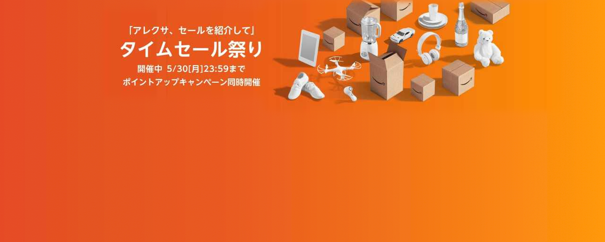
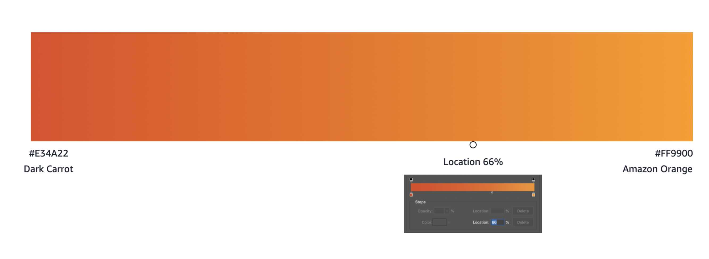
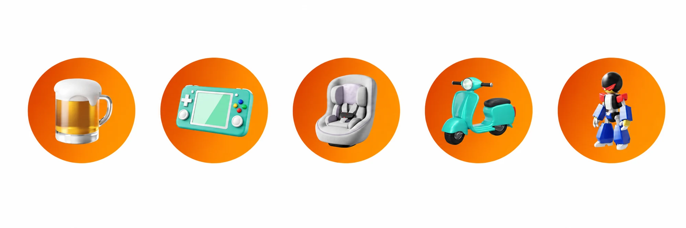
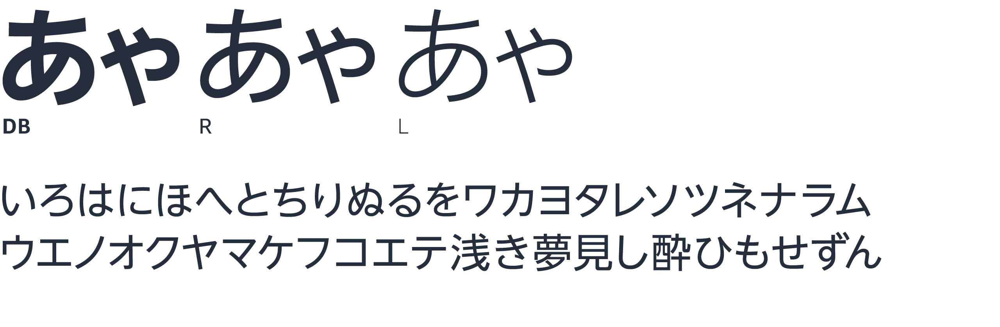
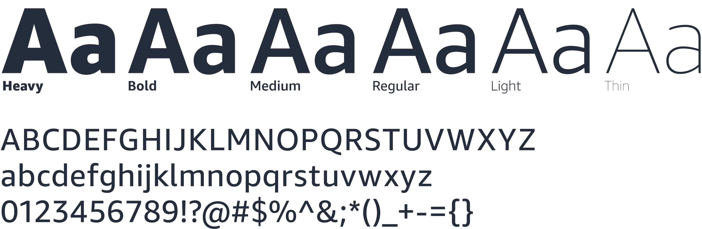
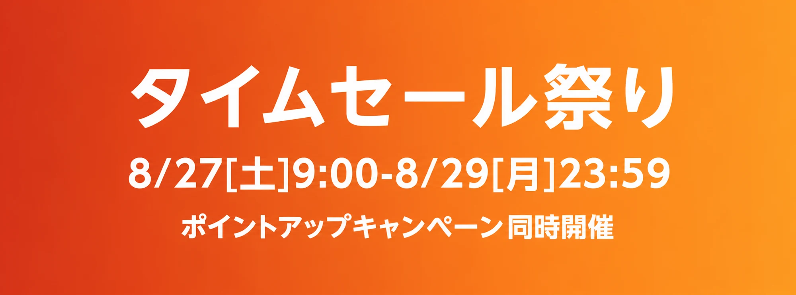
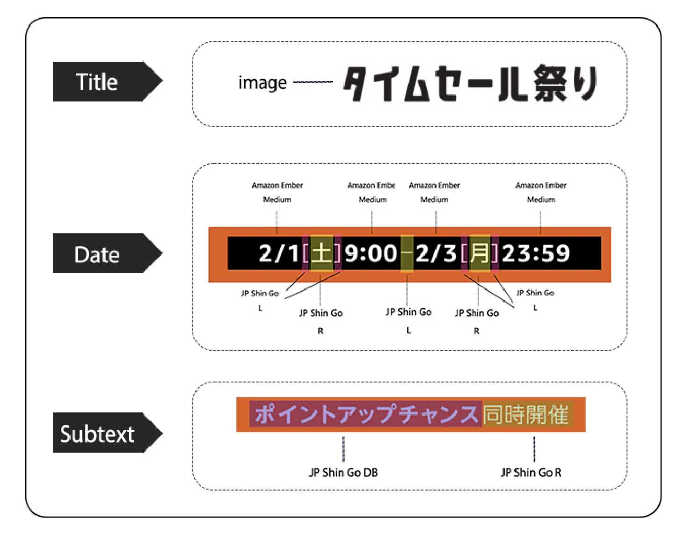
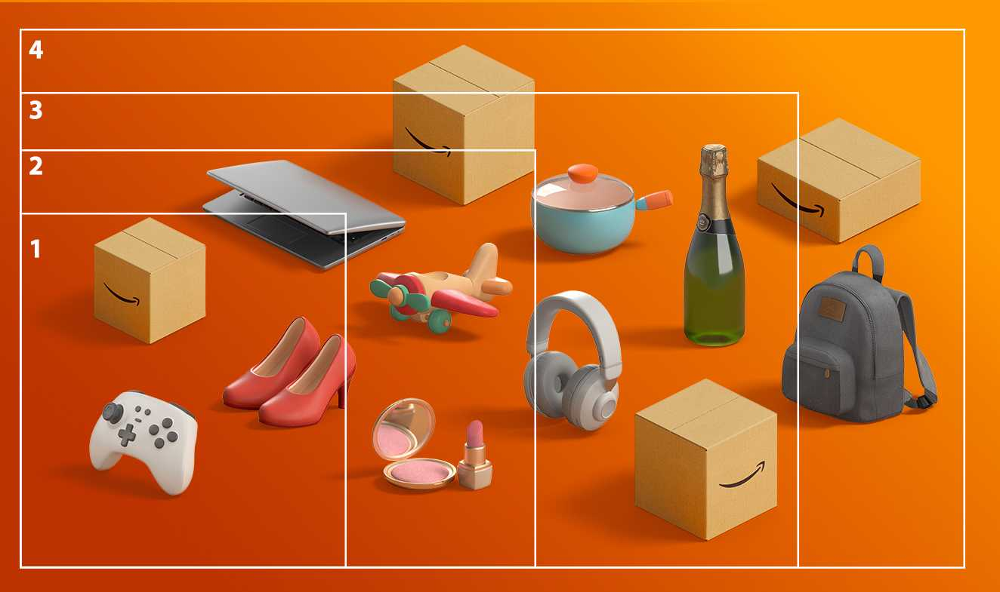
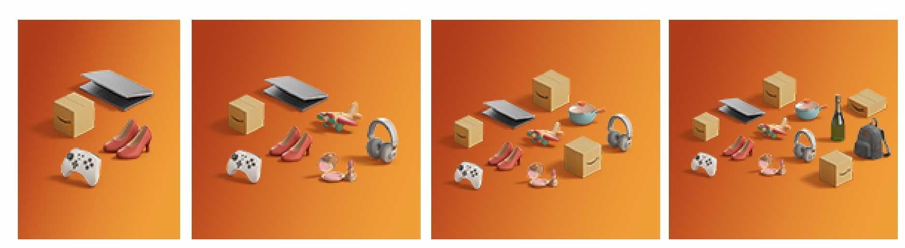
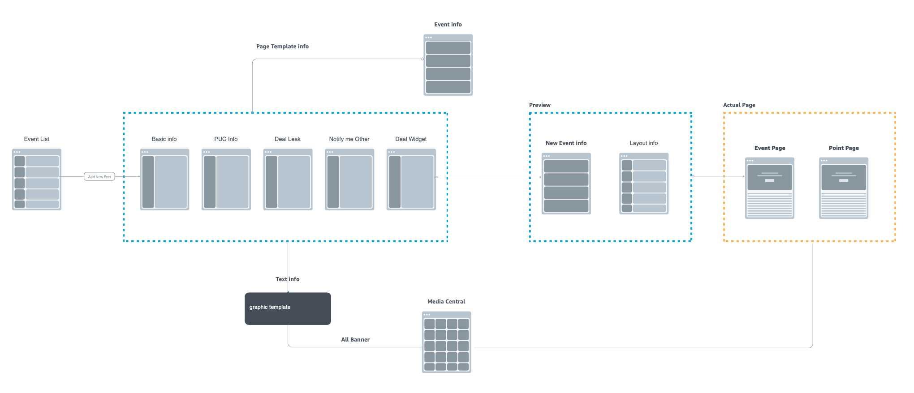

A monthly campaign had to feel fresh while remaining recognizable across dense Japanese copy, changing categories, and radically different formats.
01 / Creative brief
Fresh each month. Recognizable at a glance.
Monthly Deal Event is a recurring high-velocity Amazon Japan campaign. Each event required a recognizable identity across many placements while accommodating changing dates, copy, categories, and promotional messages.
High frequency
Repeating the campaign every month made one-off asset production expensive and inconsistent.
Local density
Japanese typography, dates, subtext, and promotional language required more deliberate hierarchy.
Many formats
Key visuals needed to remain recognizable across radically different banner dimensions.
02 / Visual language
Build consistency without making every event identical.
The creative direction balanced familiar product silhouettes with a rounded, tactile 3D character. Category variety needed to feel like one visual family—not a collection of unrelated assets.
The system expanded a flat 2D icon set into more tactile 3D representations for more than 60 product categories. The objects remained cartoon-like enough for Amazon’s campaign tone while keeping category silhouettes distinct.
Creative decision / Color & character
Move from white objects to a richer product world.
The documented refresh replaced predominantly white models with colored objects. Product silhouettes stayed familiar, while materials and color gave the assortment a more varied character.

Let the objects vary. Keep the background stable.
The updated gradient is retained across monthly campaigns. A stable orange environment gives changing product combinations a consistent setting.

One language for products, devices and categories.
The system extends beyond the main assortment: device-led banners and circular category icons use the same dimensional character. Shared lighting, recognizable silhouettes and orange surroundings connect different campaign surfaces.

01 / CATEGORY ICON SYSTEM
The starting point: flat symbols
A compact visual vocabulary
The earlier set used simplified silhouettes and flat color.
02 / CATEGORY ICON SYSTEM
One family of dimensional objects
Recognizable objects, consistent character
The updated library adds volume, material cues and rounded proportions. Orange circular backplates hold the varied categories together, while the objects retain distinct silhouettes.
03 / CATEGORY ICON SYSTEM
Carry the system into campaign pages
From an icon library to a browsing surface
This campaign-page mockup brings the key visual, point-up promotion and category navigation into one view. Orange circular backplates connect the dimensional category icons to the campaign’s broader visual identity.

02B / Art direction & quality
Good renders do not automatically make a coherent campaign.
D1 Japan supplied the overarching creative direction and master key visual. Within GPS CN, my role was to carry that direction through collaborative production and maintain a consistent standard across the team.
Our CN 3D team added color, materials and texture to the earlier white models, then handed the rendered assets to graphic designers for composition. Individually, the renders could look strong; together, their shadows, highlights and tonal balance still needed adjustment.
Creative framework → Production → Review
D1 Japan → GPS CN + CN 3D team → Graphic composition → My art direction & QA → D1 Japan review
Judge the whole image, not each object.
I reviewed how the rendered objects worked together and gave feedback on Photoshop adjustments: shadows, light and dark surfaces, and the overall balance of the composition. The aim was a coherent scene, not just a collection of polished assets.
Protect the composition across formats.
Turning the master key visual into different banner sizes required judgment about what to crop and where to leave space. I reviewed individual adaptations, identified weak crops and guided designers toward a balanced composition for each placement.
Turn recurring issues into shared guidance.
Each week, I gathered recurring production issues into a slide presentation and discussed them with the design team. This made individual feedback reusable and helped align a large team around consistent visual and production standards.
My contribution was the connection between direction and delivery: helping work produced by many designers feel unified and ready for review by the Japan team.
03 / Japanese typography
Design around how Japanese promotional content behaves.
Localization shaped the system rather than being applied at the end. Japanese font weight, date structure, information density, promotional phrasing, and visual rhythm were considered alongside Amazon’s global identity.
Give each writing system its own typographic role.
The typography specification pairs UD Shin Go NT for Japanese with Amazon Ember Display for English and numerals. The weight specimens show how headline emphasis and supporting information can coexist.



Typography becomes a reusable rule

01 / TitleA distinct title asset establishes campaign recognition.
02 / DateNumerals, weekdays and time remain an explicit typographic group.
03 / SubtextSupporting promotion has a separate role below the core message.
04 / Art direction across formats
Recompose the story. Preserve the identity.
The key visual had to work as a wide banner, a compact placement and a tall composition. The visual identity stayed consistent, while text and object groups were recomposed for each format.
Composition rule / Master to variants
Build the master with smaller placements in mind.
Four selections are defined from the same key visual. Each selection keeps a recognizable product group; typography is composed separately to suit the placement. This makes consistency a reusable rule, not a repeated manual reconstruction.


Recompose the campaign—not just resize it
KeepCampaign title, dates and orange visual identity remain recognizable.
ReflowText and product clusters change position as the placement changes.
SelectThe visible mix of objects adapts to the available composition.
Project Moon / Design at scale
Let the visual system do more of the work.
I led the website UI/UX for Project Moon, connecting campaign inputs and reusable visual rules in a self-service production workflow.
Production effort / MDE event-page project
~40h ≤5h
From manual image creation and review to template-supported production.
Before / Manual production
Request → Create graphics → Review → Content setup → Publish
After / Project Moon
Event information → Generate variants → Upload → Content updates → Publish
Production effort for one MDE event-page project: approximately 40 hours of manual graphics and review, compared with at most 5 hours using Moon.
See the handoffs that the template system replaces.
The manual route includes request checking, Photoshop production, director review, approval and placement-by-placement setup, with time tracking alongside it. The Moon diagram connects structured inputs to banner generation, upload, content updates and publication.
Preset templates with fixed visual elements support direct publishing.
Connect event data to the actual campaign page.
The architecture separates event setup, content modules, preview and publication. Basic information, PUC information, deal icons, notify-me offers and deal widgets feed the page template; generated graphics connect through Media Central.

Shared modules
Layout rules and component configuration connect page-level visual and interaction behavior.
Fewer repeated steps
Batch banner generation, dynamic content loading and notifications support the documented production workflow.
Configurable pages
Custom banner templates, dynamic components and scheduling support different event needs. Personalization was planned for phase two.
Manage the event portfolio
Date and status filters help operators find recurring campaigns. Event Type links the event to its style guide; status indicates its current stage. Banner Preview and Actual Page provide separate paths to the generated assets and scheduled page.
Create an event
Event ID, type, marketplace, business group, access group and timing establish the campaign context before content entry.
Enter multilingual content
Japanese, English and Chinese tabs organize the message, dates and point-offer information used to generate campaign banners. Structured inputs separate editable content from its visual treatment.
Preview and inspect generated banners
A banner gallery supports preview and approval. Selecting an asset opens a drawer with the graphic group, banner type and Media Central reference. This view connects the visual output to its production metadata.
A production tool needs its own visual rules.
The logo documentation covers letter spacing, clear space, dark and orange applications. The interface uses a white content surface, dark navigation and semantic status colors.
MOON / TYPOGRAPHY
One font. Two sizes.
Arial keeps interface text simple and familiar.
ArialAa Bb Cc · 0123456789
- Headings 16 pt
- Event information
- Body text 14 pt
- Enter the details for your campaign.
- Button labels 14 pt
- Status labels 14 pt
- Generated
Red #CA3131 identifies failed states; blue #1F76D0 identifies generated states. Teal #0097A7 complements neutral gray and white.
05 / Creative impact
A visual identity built to keep evolving.
The updated assets were deployed through Amazon’s self-service campaign workflow, supporting recurring production across formats and product categories while substantially reducing production time.
12 key visuals
Evergreen 3D key visuals across multi-category and device-focused directions.
71 PUC icons
PUC icons produced across the category library.
90% first-round pass
90% of deliverables passed D1 Japan review on the first round at each review stage.
Team delivery results · GPS-CN Success Stories, November 2022.
The design contribution was a clearer local identity and a reusable production model: consistent enough to scale, flexible enough to change every month.